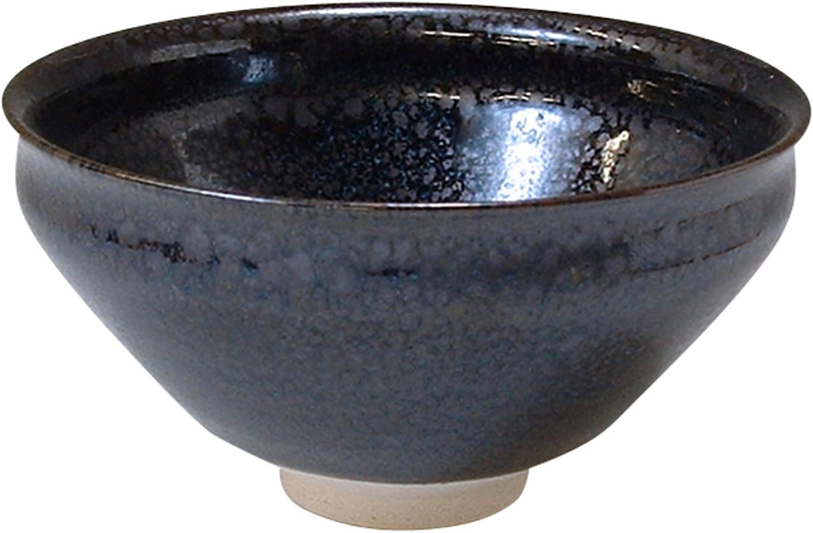
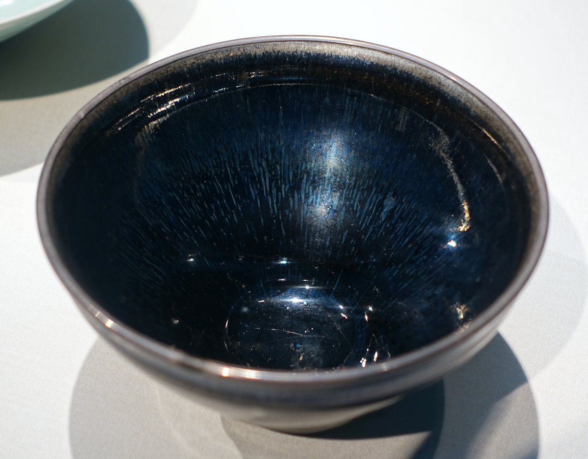

Look closely at a bowl like this and the streaking looks hand-drawn. It isn't. It's the byproduct of a firing technique that potters in Song-dynasty China stumbled onto roughly 800 years ago -- and that Japan has been chasing, refining, and using in actual tea practice ever since.
The glaze family is called tenmoku, and its defining feature comes from iron. During a long, hot firing, iron oxide dissolved in the glaze migrates to the surface and crystallizes as the kiln cools -- forming fine, hair-like streaks (called "hare's fur," 兎毫) or, under slightly different conditions, round metallic-looking spots ("oil spot," 油滴). No pigment is painted on. The pattern is a record of exactly how hot the kiln got and how it cooled, which is also why no two tenmoku bowls -- ancient or modern -- come out quite the same.

These black-glazed bowls were first made at the Jian kilns of Fujian Province during the Song dynasty (12th–13th century), prized in China for tea competitions where the dark glaze made it easy to judge the whiteness of whisked tea foam. Japanese Zen monks studying at monasteries on Mount Tianmu (天目山) in China brought bowls like this home with them. The Japanese reading of that mountain's name -- Tenmoku -- became the name for the entire glaze family in Japan, where it was adopted into tea ceremony practice and has been made ever since.
The rarest variant, yohen tenmoku (曜変天目), produces an iridescent, shifting halo around each spot that changes with the angle of light. Only three complete Song-dynasty yohen tenmoku bowls are known to survive anywhere in the world -- and all three are in Japan, each designated a National Treasure, each held by a different museum (Fujita Museum, Seikaido Bunko Art Museum, and Ryuko-in at Daitoku-ji). They're exhibited only occasionally, sometimes years apart.
Tenmoku never stopped being made. Kiyomizu-yaki, Kyoto's 400-year-old ceramic tradition centered near Kiyomizu-dera temple, has no single fixed house style -- individual kilns are free to work in whatever clay, glaze, and technique they choose, which is exactly why the tenmoku glaze family has stayed alive there as a living option rather than a museum relic. Kyoto kilns today still work in this glaze family, at every level from artisans chasing the exact crystalline effect of the Song originals to more accessible everyday pieces finished in tenmoku-style glazes for actual daily use.
This matcha bowl, from Kiyomizu-yaki's Kagiku kiln, is one of the latter: a modern, functional bowl finished in a tenmoku-family glaze, made for daily tea practice rather than display. It won't have the hand-crystallized pedigree (or the price tag) of an antique or a master-potter reproduction -- what it offers instead is a real, usable way to bring that 800-year-old visual language into your own tea corner, arriving in its own presentation box.
Kyoto Ware Kiyomizu-yaki matcha bowl, Kagiku kiln, tenmoku-family glaze, comes with a presentation box. Made in Kyoto, Japan.
See current price on Amazon →As an Amazon Associate, I earn from qualifying purchases.
This page contains an affiliate link — if you buy through it, it costs you nothing extra and helps support this site. The Song-dynasty Jian ware bowl pictured above is a museum piece shown for historical context; it is not the product for sale on this page.